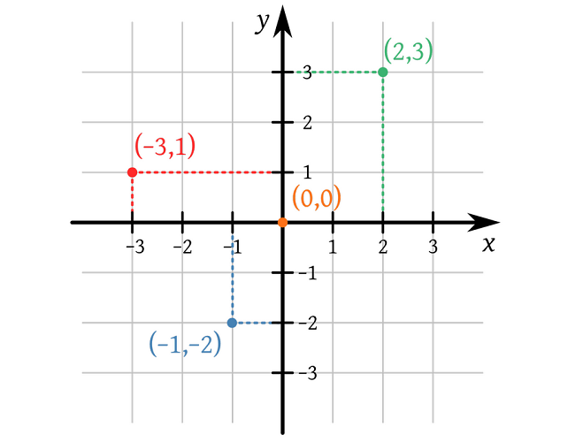
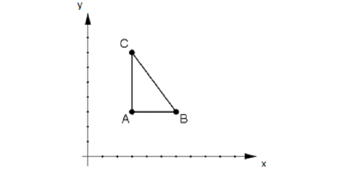

Um plano cartesiano, ou um sistema de coordenadas cartesianas funciona como um gráfico, com valores positivos e negativos e um ponto em comum cuja coordenada é 0,0. Veja abaixo:
Você pode verificar acima que um plano cartesiano é composto por uma cruz onde a coordenada vertical é chamada de Y e a horizontal é chamada de X. Os pontos à esquerda de Y são negativos e à direita, positivos, e os pontos acima de X são positivos e abaixo são negativos. A união de dois pontos gera uma linha e de três pontos ou mais pode gerar uma polilinha ou uma forma fechada. Como você pode notar abaixo:
Todo cálculo feito pelo computador para gerar formas utiliza-se do plano cartesiano, no entanto, enquanto um plano cartesiano costuma possuir valores positivos para cima e para a direita, ou seja, o ponto zero encontra-se na extremidade inferior esquerda, o computador entende como ponto zero da tela o canto superior esquerdo do monitor, sendo assim, os valores são positivos para baixo e para a direita.
No plano cartesiano, uma linha que vá do ponto 0,0 até o ponto 0,2 será uma linha horizontal, enquanto uma que vá do ponto 0,0 ao ponto 2,0 será vertical, isso porque a primeira caminhou no eixo horizontal X e a segunda no eixo vertical Y, sempre seguindo a regra X,Y.
Em softwares de desenho técnico algumas vezes é possível utilizar coordenadas cartesianas para construir formas com maior precisão, e em softwares de criação em 3D o plano cartesiano possui ainda o eixo Z.
Não se preocupe com tudo isso pois o computador faz esse trabalho todo deixando para você apenas a parte de desenhar! Mas se quiser treinar coordenadas cartesianas você pode utilizar caminhos (path) em gráficos SVG, o que pode ser feito em seu próprio navegador. Confira:
Polyline W3 Schools